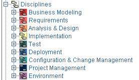
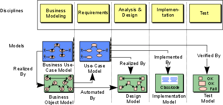
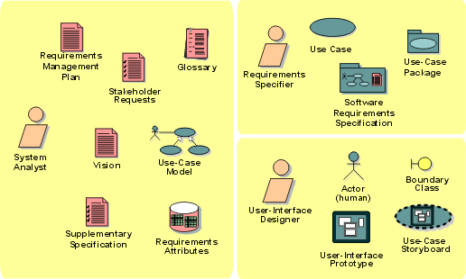
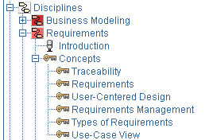

Key Concept: Discipline
A discipline is a collection of related activities that are related to
a major 'area of concern' within the overall project. The grouping activities
into disciplines is mainly an aid to understanding the project from
a 'traditional' waterfall perspective - typically, for example, it is
more common to perform certain requirements activities in close coordination
with analysis and design activities. Separating these activities into
separate disciplines makes the activities easier to comprehend but
more difficult to schedule.

Disciplines in the treebrowser
Like other workflows, a discipline's workflow is a semi-ordered sequence of
activities which are performed to achieve a particular result. The
"semi-ordered" nature of discipline workflows emphasizes that the discipline workflows cannot present the real nuances of scheduling "real work",
for they cannot depict the optionality of activities or iterative nature of real
projects. Yet they still have value as a way for us to understand the process by
breaking it into smaller 'areas of concern'.
Each 'area of concern' or discipline has associated with it one or more
'models', which are in turn composed of associated artifacts. The most important
artifacts are the models that each discipline yields: use-case model, design
model, implementation model and test suite.

Each discipline is associated with a particular set of
models.
For each discipline, an activity overview is also
presented. The activity overview shows all activities in the discipline along with
the role that performs the activity. An artifact overview
diagram is also presented. This diagram shows all artifacts and roles involved
in the discipline.

Sample artifact overview diagram, from the requirements discipline.
It is useful to note that the 'discipline-centric' organization of artifacts is
sometimes, though not always, slightly different from the artifact set
organization of artifacts. The reason for this is simple: some artifacts are
used across disciplines; a strict discipline-centric grouping makes it more
difficult to present an integrated process. If you are using only a part of the
process, however, the discipline-centric artifact overviews may prove more useful.
Some of the key concepts of the process, such as iteration, phase, risk,
performance testing, and so on, are introduced in separate sections of the
process, usually attached to the most appropriate discipline.

An example of Concepts and their organization in the treebrowser
Copyright
© 1987 - 2001 Rational Software Corporation
|  Overview >
Overview >
 Key Concepts >
Key Concepts >